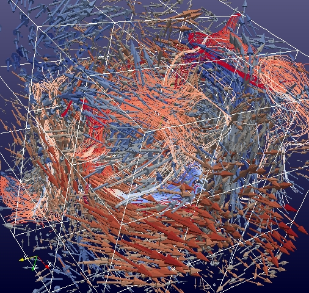

Snapshot of a 2D Kuramoto-Sivashinsky solution
Snapshot of a 2D Kuramoto-Sivashinsky solution
 Vorticty in a 2D flow
Vorticty in a 2D flow
Vortex tubes and stream lines.
1D Kuramoto Sivashinsky spectral simulation, time on y-axis.
3D Euler-Voigt simulation with vortex tubes and streamlines.

Simulations of turbulent flow run with collabortors at Texas A&M.


Isosurfaces and velocity

Laminar flow

Taylor-Green flow
Some vortex tubes
Vortex Cloud
Vortex vectors and isosurfaces.